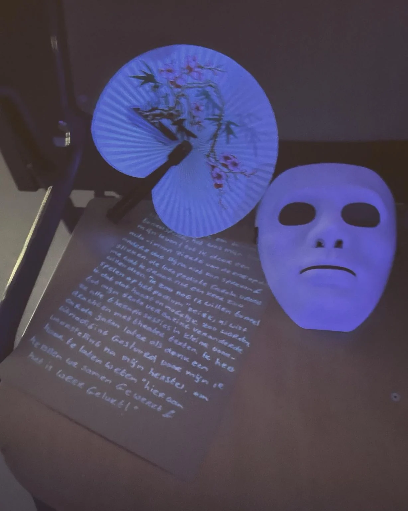
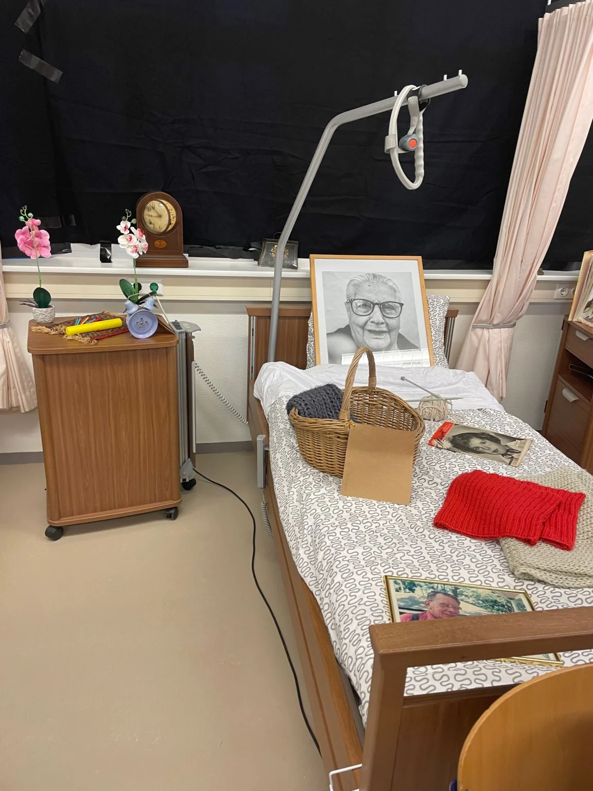
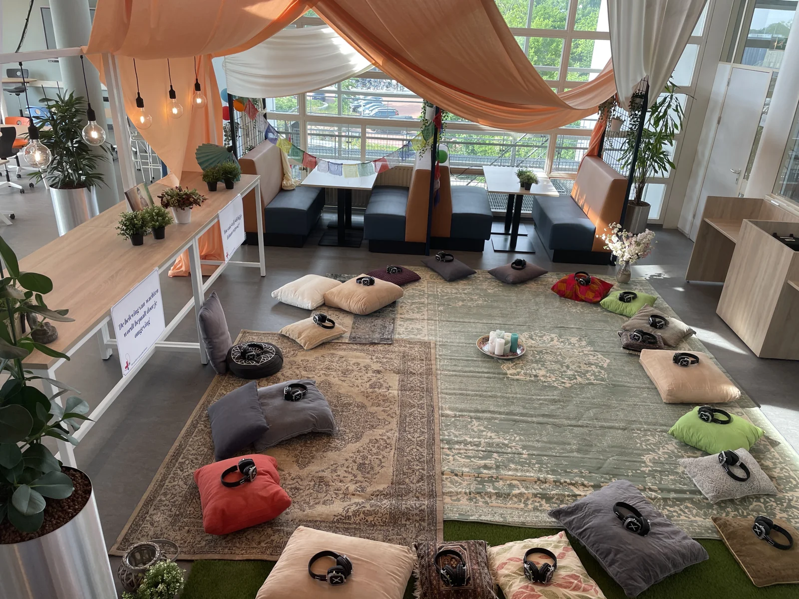
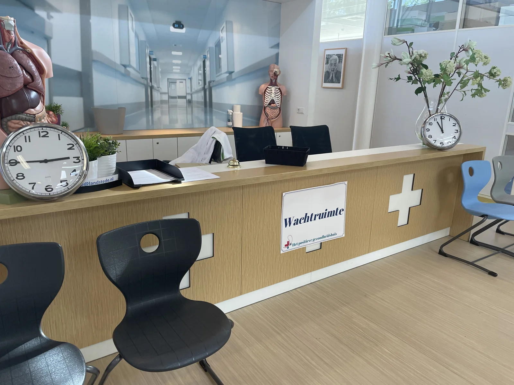

PROJECT / Immersive experiences
Positive Health Experience — three rooms
An evening for healthcare professionals who wanted more than a speaker. Three physical experience rooms exploring Positive Health made the influence of waiting, attention and small gestures tangible.
- Client / partner
- Landstede Opleidingen / Zorgexperience
- My role
- Concept, delivery and facilitation – together with my business partner
- Period
- Feb–Mar 2022
 FEEL
FEELHEALTH




The brief
Landstede wanted an evening where healthcare professionals experienced something themselves, rather than listening to a speaker.
The experience
Three rooms exploring Machteld Huber’s Positive Health. An uncertain wait followed by a meditation room made the influence of surroundings tangible. A personal conversation focused on caring for healthcare professionals. Patient stories appeared under blacklight, revealing the significance of small gestures.
My contribution & the response
Together with my business partner, I conceived and delivered the entire concept and facilitated the evening. The conversations afterwards moved participants; some were brought to tears.